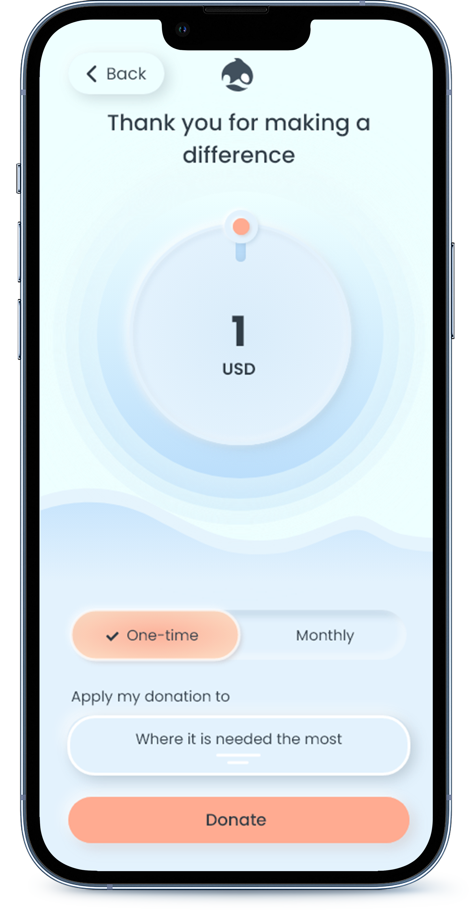

Awhale is an app focused on helping whales. It gives access to organizations worldwide sharing the mission of saving whales and
helping the ocean environment. Awhale targets people who care about the environment and need a fast and simple way to make
donations and stay informed about the ways to get involved.
Project Duration:
July 2022 - October 2022
My Role:
UX Design and Research, UI Design
My Responsibilities:
My responsibilities included conducting interviews, user research, competitive audit, paper and digital wireframing, low and
high-fidelity prototyping, visual design, and addressing accessibility issues.
The Problem Space
How can I create a mobile-first responsive website design to help people make contributions to the marine environment online so
that they have an easy and fast way to contribute to any organization aiming to help whales and the ocean environment?
The Goal
Create an app and responsive website to help people make fast and adjustable donations, get access to educational resources, and
be a part of a community that wants to be involved in making a positive change in the ocean environment.
Understanding the User.
User research
Personas
Problem statements
Competitive audit
Ideation
Looking into it personally
I put high emphasis on creating empathatic connections and conducting interviews. That included questions such as asking to
describe the experience with donations to charity organizations, being a member of one, or having an interest in a specific
social issue. The Interview goal was to understand what drives people to volunteer their time and money to environmental causes
and identify concerns and frustrations people experience while wanting to help.
What I sought to discover during my interview
During this round of interviews, I gathered information including age, location, educational level, occupation, marital status, and
other key identifiers.
Target participant characteristics included:
ages 18-65
people who have an interest in helping the environment(at least once transferred money to a charity organization, are members of
online groups and offline environment communities)
people who transferred money or volunteered their time to charities
participants of different gender
Questions
Have you volunteered your time to social causes? Would you do it again?
Are there any charities you support on regular basis?
How hard do you find it to balance your daily responsibilities with the help to the environment?
How often do you donate your time or money to social causes?
Do you feel there are obstacles on your way to helping the planet?
Which organizations helping marine life are you familiar with?
If you were to consider monthly automated donations, what would your concerns be?
Is there anything that would make you want to be more involved in helping whales?
Have you ever experienced a situation when you wanted to help but changed your mind in the end? Can you tell me more about it?
How much money would you feel comfortable spending on donations monthly?
What challenges do you face in the process of helping charity organizations? Is there any way in which you feel these challenges could be resolved?
Is there any reason you would prefer regular payments to one-time transfers?
Would you be interested in getting additional information about the cause?
What are the reasons for volunteering?
mental satisfaction
desire to help the environment
extra credits on the resume
tax deductions
other(please specify)
How much does it help to stick with new endeavors if you have a support group?
The average number of choices we make every single day is approximately 35000. The research showed that many options resulted in anxiety and discontent.
68%
Had a hard time picking an organization to donate to, hence delaying their decision to do so
95%
Reported not having enough time and forgetting to make regular contributions while being interested in the issue of the ocean environment
35%
Did not have enough information about why whales need to be saved
75%
Felt disappointed not having a community with the same interest in the cause
80%
Felt overwhelmed with the amount of information available online and do not know where to start
Persona 1: Freja
Freja is a young adult with a large focus on helping the environment who needs one go-to place for latest news and events as well as suggestions on how to help whales because she wants to make a difference.
Persona 2: Mattias
Mattias is a concerned individual who needs reminders and automatic payments set up because he cares about the whales' population and wants to help save them.
Competitive Audit
The goal of the competitive audit was to compare the donations experience of each of the competitors' websites on different devices. For the purpose of this research, I analyzed the activity and digital experience of 4 organizations. Our competitors are widely known non-profits with a mission to protect whales and their environment.
OCEAN ALLIANCE positions itself as one of the oldest non-profits with a mission to protect whales and their ocean environment through research, scientific collaboration, public education, and the arts. They place a big emphasis on collaboration and research to maximize efforts.
SAVE THE WHALES is focused on educating the public, especially children, about ocean inhabitants and fragile marine environments.
SEA SHEPHERD SOCIETY positions itself as a defender of all marine wildlife, without exception.
PACIFIC WHALE FOUNDATION positions itself as the ocean guardian in the face of emerging threats. As leaders in the development of responsible whale watching, they have developed a broad, holistic approach to marine tourism.
Through an audit, some strengths and weaknesses were detected which are listed further.
01
Ocean alliance
Strengths:
The website is well-designed and easy to use
Introduction of unique features such as drones for whale research
Opportunity to adopt a whale and the possibility of donating in someone's name
Easy donation process
A large variety of engaging educational content
Whale acoustic library
Wide range of partners
Weaknesses:
Not offering the app in languages other than English
Not having the features for audio or visual impairments
Confusing sidebar menu
Low contrast in the contact form
Low readability due to all caps for large texts
02
Ocean alliance
Strengths:
The website is well-designed and easy to use
Introduction of unique features such as drones for whale research
Opportunity to adopt a whale and the possibility of donating in someone's name
Easy donation process
A large variety of engaging educational content
Whale acoustic library
Wide range of partners
Weaknesses:
Not offering the app in languages other than English
Not having the features for audio or visual impairments
Confusing sidebar menu
Low contrast in the contact form
Low readability due to all caps for large texts
03
Ocean alliance
Strengths:
The website is well-designed and easy to use
Introduction of unique features such as drones for whale research
Opportunity to adopt a whale and the possibility of donating in someone's name
Easy donation process
A large variety of engaging educational content
Whale acoustic library
Wide range of partners
Weaknesses:
Not offering the app in languages other than English
Not having the features for audio or visual impairments
Confusing sidebar menu
Low contrast in the contact form
Low readability due to all caps for large texts
04
Ocean alliance
Strengths:
The website is well-designed and easy to use
Introduction of unique features such as drones for whale research
Opportunity to adopt a whale and the possibility of donating in someone's name
Easy donation process
A large variety of engaging educational content
Whale acoustic library
Wide range of partners
Weaknesses:
Not offering the app in languages other than English
Not having the features for audio or visual impairments
Confusing sidebar menu
Low contrast in the contact form
Low readability due to all caps for large texts
Gaps
Competitor's products:
are only offered in the English language
have no designated apps
provide a limited amount of accessibility features
lack brand identity consistency
use large amounts of text in capitalized letters which makes it unreadable
don’t provide enough contrast which doesn’t follow accessibility guidelines
Opportunities
Create a designated app for an easy mobile donations experience
Offer more languages for the app
Integrate the app with voice-assisting technology
Simplify the donations process
Offer a selection of like-minded organizations to donate to
Add a monthly donation subscriptions option
Add the “Adopt a whale” feature
Create a consistent brand identity
Provide high contrast for optimized readability
Ideation
I used the "Crazy Eights" and "How Might We" as part of my ideation process. I drafted iterations of each screen on paper to ensure the elements were well-suited to address all the pain points. As actionable problem statements guided the design considerations, these methods became central to solution-oriented brainstorming.
How might we?
Distilling the research into problems we can solve
How might we design a simple straightforward process to adopt a whale for regular donation payments?
How might we create a collaborative experience for like-minded people to support each other?
How might we design solutions for easy automated monthly payments that fit different budgets?
How might we create a personalized experience?
How might we make people comfortable signing up for monthly donations?
Starting the Design.
Digital wireframes
Low-fidelity prototype
Usability study
Digital Wireframes
As the design phase continued, I made sure to make some changes based on the feedback received through the user research.
Usability Study: Parameters
Study type:
Moderated usability study
Location:
Bangkok, Thailand
Participants:
5 participants
Duration:
20-30 minutes
Usability Study: Findings
I conducted a round of usability studies the results of which revealed which aspects needed iteration and guided my designs from wireframes to mockups.
01
Adoption Process
Users want to know what whale adoption is and how it is different from donating.
02
Importance of the Cause
Users need to know why the whales need to be saved.
03
Reporting
Users need to know where their money is being directed.
Refining the Design.
Mockups
High-fidelity prototype
Accessibility
Style Guide
Below is my final iteration of the vision for Awale, which shows several different design elements outlined in more detail. I created the logo using the symbolism of a whale in its natural environment. I leaned into light blue as my main color to capture the color of the water as a natural marine environment and I set this against crisp and refreshing shades. I was looking to maintain fresh, calm, inspiring, and natural tones throughout the digital experience. I chose Poppins for its clear and bold forms.
Mockups
Profile
For a smooth adoption experience, I included different plans for different budgets, each including special benefits. I provided an opportunity to make this adoption a gift, which will include a digital certificate.
Adoption
For a smooth adoption experience, I included different plans for different budgets, each including special benefits. I provided an opportunity to make this adoption a gift, which will include a digital certificate.
Donation
To accommodate different budgets, the users are given an opportunity to pick an amout they would feel comfortable donating.

Accessibility Considerations
01
Included a variety of languages other than English.
02
Used icons to help make navigation easier and better understand the designs.
03
Provided high contrast for texts in accordance with WCAG requirements.
Responsive Design.
Information Architecture
Responsive Design
Sitemap
Responsive Design
After building the informational architecture I crafted a responsive design to provide an optimal viewing experience on screens of different sizes. The aim was to create responsive pages that look great on desktop, mobile, and tablet devices.
Going Forward.
Takeaways
Next steps
Impact
The app makes users feel like it is saving them time for donations and provides resources to be more involved in enhancing the environment.
What I Learned
While designing the Awale App, I learned that user feedback and research guided every iteration of the process. Designing pages for mobile first was a great way to help find what was most important within the experience.
I understood the needs of users through conversations and user tests and created an engaging app from both visual and user perspectives.
Thank you for your time reviewing my work on the Awhale app.
If you would like to get in touch, drop me a message.


.png)